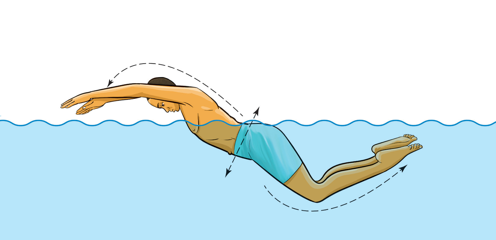

Activity 3.5
Use kickboards to practice frog kicks repetitively to master the skill.
Dolphin kick
The dolphin kick is a powerful, wave-like motion used in the butterfly stroke and underwater swimming. It involves keeping the legs together and generating movement from the hips, creating a fluid undulating motion similar to the movement of a dolphin’s tail, Figure 3.16. This kick requires strong core engagement and flexibility to produce a continuous wave that moves through the body. The dolphin kick is useful for explosive starts and turns in competitive swimming.

Activity 3.6
Use kickboards to practice dolphin kicks repetitively to master the skill.
Arm movements
Arm movements play a crucial role in determining the swimmers’ speed, direction and overall efficiency in the water. Proper arm techniques help generate propulsion, reduce resistance and maintain balance. Each stroke requires specific arm movements that must be synchronised with breathing and kicking for smooth and effective swimming. The principles for arm movements include:
Keep the fingers together to maximize water resistance
When the fingers are slightly spread apart, water can pass through the gaps, reducing efficiency. By keeping the fingers close together and cupped slightly, swimmers create a larger surface area to push against the water, generating more force with each stroke, Figure 3.17. This technique is important in front crawl, breaststroke, backstroke and butterfly, where continuous propulsion is necessary.